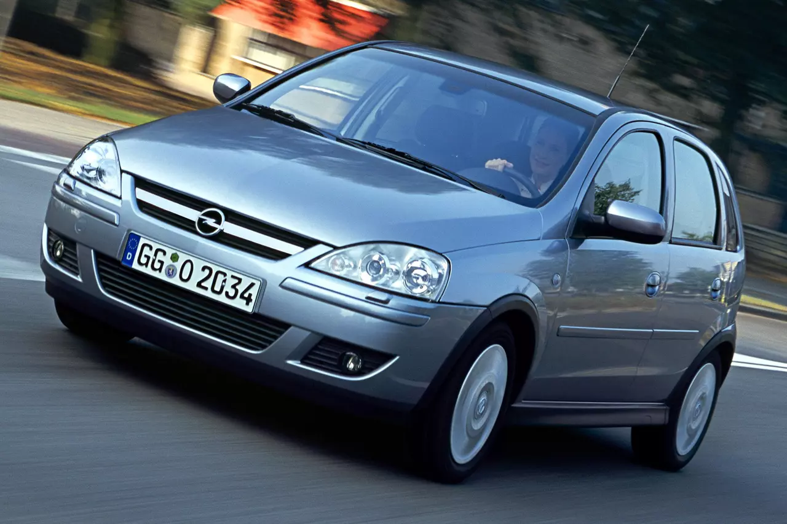
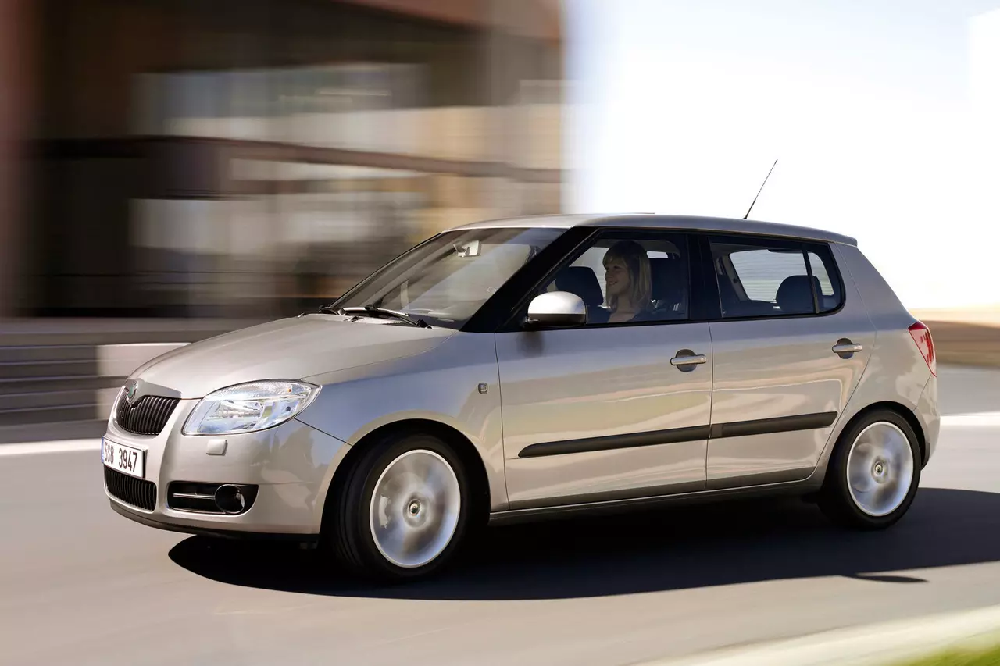
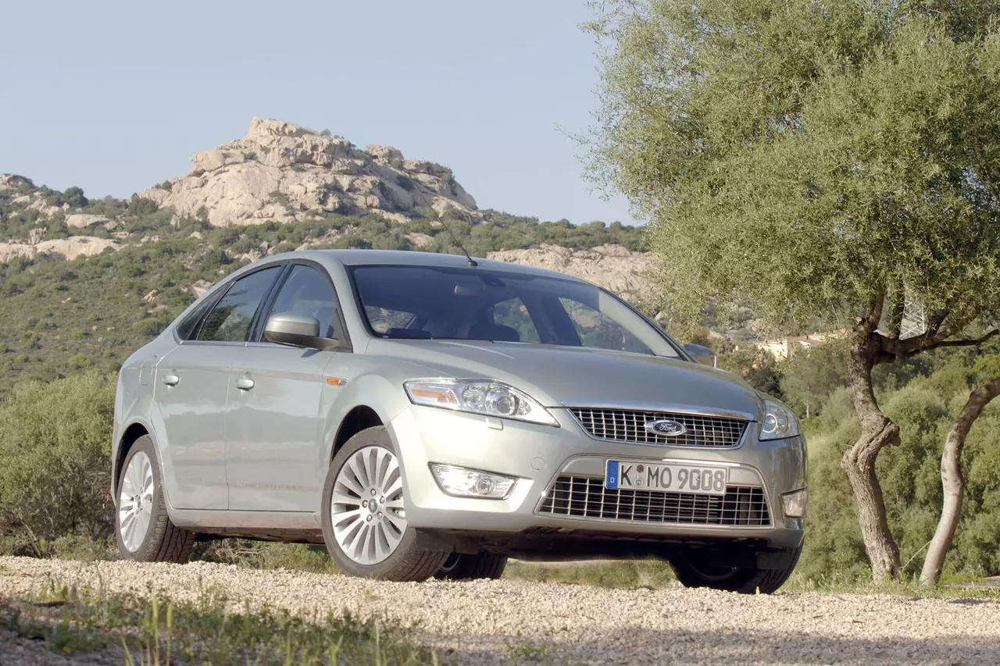

Ojetiny s automatem do 100 000 Kč
Které jsou nejlepší?
Opel Corsa
Třetí generace Corsy je možná zbytečně nedoceněné auto, protože aspoň částečně udržované kusy umí dodnes spolehlivě fungovat a nemusí být prolezlé korozí. Ale rozpočet 100 000 Kč by vám mohl stačit i na nastupující generaci, která ale už docela přibrala na váze. Ale zase přidala na pasivní i aktivní bezpečnosti a výbavě.
Opel uměl nabídnout široké konfigurace výbav, motorů a převodovek, ale v době Corsy C byl automat spíše ještě výjimka v takto malých vozech. Ovšem právě řešení od Opelu s robotizovaným automatem Easytronic bylo svého času nejlevnější a nejúčinnější řešení na trhu. V kombinaci s motorem 1.2 16V Corsa slušně jela a dodnes může fungovat. Nebyla sice nikdy žádným zázrakem kultivovanosti, ale pro lidi s omezenou pohyblivostí či strachem z řazení je to vysvobození a záruka svobodné mobility.

Škoda Fabia 1.6 MPI
Druhá generace Fabie je taková bazarová stálice, a i když už tohle auto stárne, je to pořád spolehlivý dělník. A ve verzi s automatem i docela příjemný na městské popojíždění do kolon. Na rozdíl od pozdějšího DSG totiž tenhle automat jede hladce a autem necuká. Seženete na ni všechno, běžné opravy zvládnete i svépomocí a údržba nestojí přehnaně moc. Občas to samozřejmě nějakou investici chtít bude, ale dá se to utáhnout.
Tahle Fabia má ještě klasický automat s měničem točivého momentu od Aisinu. Když v něm každých 60 000 km vyměníte olej, celé auto přežije. Ani motor 1.6 MPI tady tolik netrpí na vytahávání rozvodového řetězu jako u verze s manuálem a spotřeba oleje se projevuje jen u velmi zanedbaných aut. Kdo se stará, tomu tahle Fabia bude jezdit.

Ford Mondeo
Zdá se to až k nevíře, že tohle svého času vychvalované auto se dá dnes koupit za necelých sto tisíc korun. Ale čas je neúprosný a jeho zub se postupně zahlodá do sebelepších vozů. Ve své době bylo Mondeo snad nejlépe jezdící auto ve třídě nad Octavií a byli lidé, kteří nechápali, proč by si měli připlácet za tehdy uskákané BMW na runflatech, když Mondeo jezdilo lépe a s dvoulitrovým dieselem i podobně dynamicky.
Právě dvoulitrová nafta zůstala jako jeden z mála smysluplných motorů, zejména pokud potřebujete či chcete automatickou převodovkou a máte na auto jen sto tisíc. On by šel schválit i benzinový čtyřválec 2,3 l, ale těch je málo a pod 100 tisíc se sehnat prakticky nedají. Nižší cena dieselů ale odráží jednu věc: celkový stav. Auto bude mít reálně najeto půl milionu kilometrů, brzy začne reznout a podvozek dávno nebude v tom stavu, za který získávalo Mondeo plusové body.